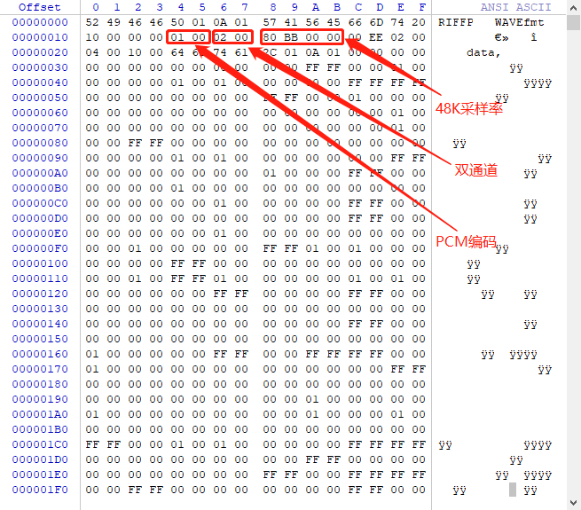

WAV格式简介#
WAV = PCM数据 + WAV文件头
-
数据块的记录方式是little-endian字节顺序
-
WAV头格式如下：
| offset address | size | type | content |
|---|---|---|---|
| 00H~03H | 4 | char | 资源交换文件标志（RIFF） |
| 04H~07H | 4 | int32 | 从下个地址开始到文件尾的总字节数 |
| 08H~0BH | 4 | char | WAV文件标志（WAVE） |
| 0CH~0FH | 4 | char | 波形格式标志（fmt ），最后一位空格。 |
| 10H~13H | 4 | int32 | 过滤字节（一般为00000010H），若为00000012H则说明数据头携带附加信息（见“附加信息”）。 |
| 14H~15H | 2 | int16 | 格式种类（值为1时，表示数据为线性PCM编码） |
| 16H~17H | 2 | int16 | 通道数，单声道为1，双声道为2 |
| 18H~1BH | 4 | int32 | 采样频率 |
| 1CH~1FH | 4 | int32 | 波形数据传输速率（每秒平均字节数） |
| 20H~21H | 2 | int16 | DATA数据块长度，字节。 |
| 22H~23H | 2 | int16 | PCM位宽 |
| 随后2字节 | 2 | int16 | 附加信息（可选，由上方过滤字节确定） |
| 随后 | ... | 不定长度字符 | “fact”,该部分是可选部分，一般当WAV文件是由某些软件转换而来时，包含该部分。若包含该部分：（1）该部分的前4字节为数据头，一般为4个字母。（2）随后4个字节表示长度，即除去头（4字节）和长度（4字节）之后，数据本身的长度。（3）最后的字节为数据本身。例如：“66 61 73 74 04 00 00 00F8 2F 14 00” 。“66 61 73 74”是fact字段的数据头，“04 00 00 00”是数据本身的长度，“F8 2F 14 00”是数据本身。（注意是little-endian字节顺序） |
| 随后4字节 | 4 | cahr | 数据标志符（data） |
| 随后4字节 | 4 | int32 | DATA总数据长度字节 |
| 随后 | ... | DATA数据块 |
- 示例
